实用功能
1.用图片隐藏文件
适用性：
适合Windows， Linux操作系统，安卓手机(安卓手机需要Linux环境)。
苹果手机、平板、电脑暂未测试。
如有技术把此功能移植到html可以联系邮箱：gxlydlyf@ssjs.shop
隐藏的步骤:
第一步：创建一个空文件夹，并打开它。
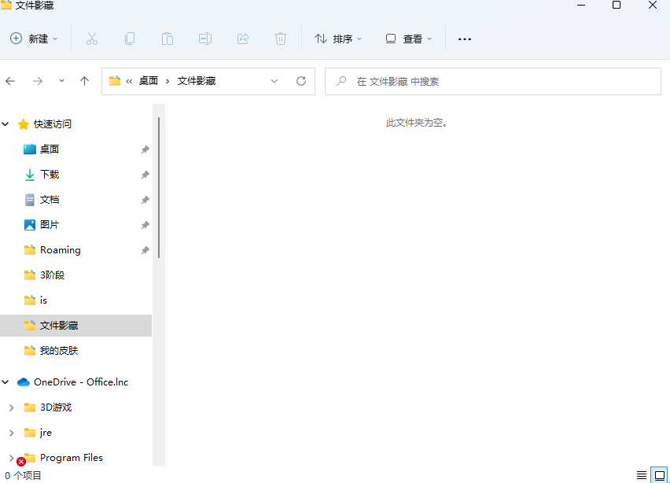
第二步：把你想要隐藏的文件全部移动到这个文件夹，任何格式都行。
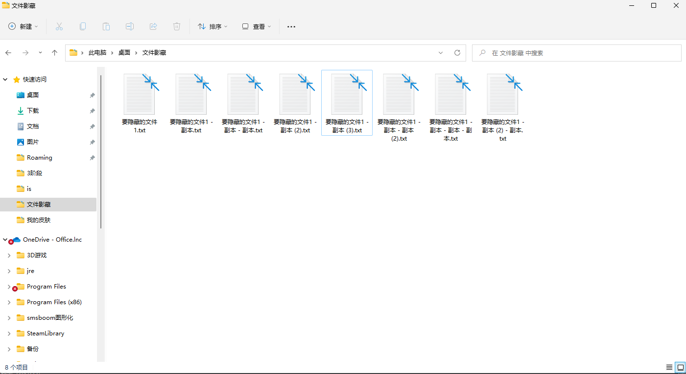
第三步：全部选中这些文件，压缩成rar格式（压缩成压缩文件的格式，zip，jar等等都可以）,然后把之前的文件删掉，留下压缩文件。
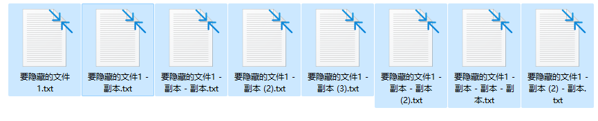
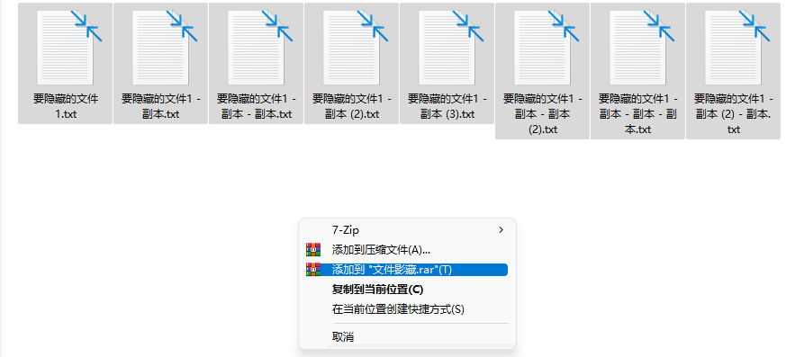
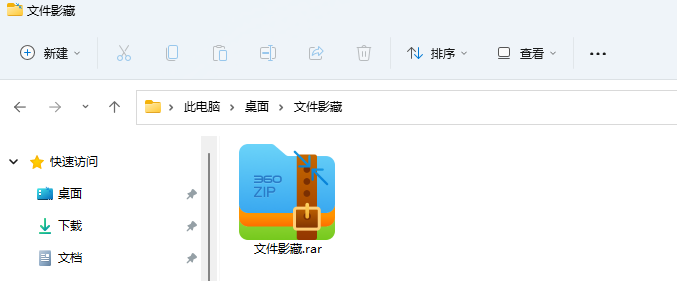
第四步：把一张图片复制到文件夹中。
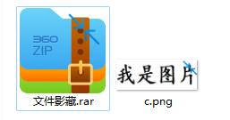
第五步：按下“Windows + R”输入cmd然后点击确定；或者搜索命令提示符并打开
Windows+R方法：
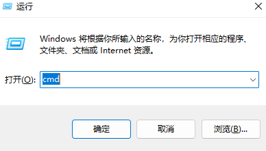
搜索方法：
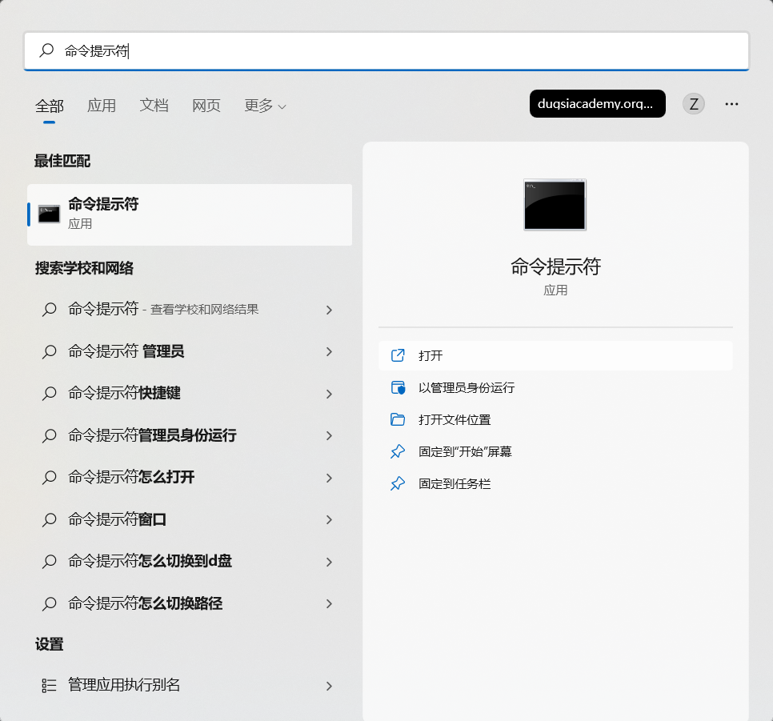
注意⚠️：千万不要打开终端，是命令提示符。
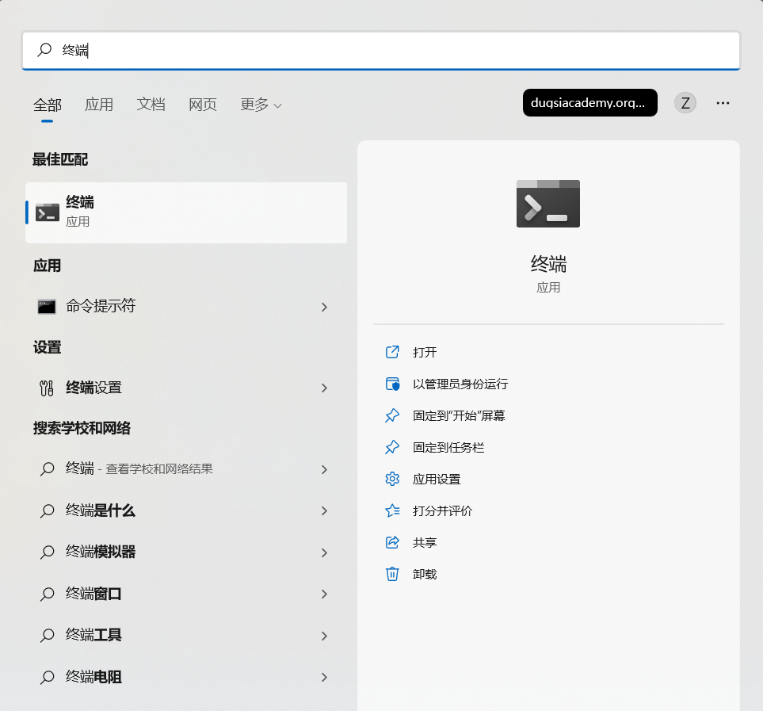
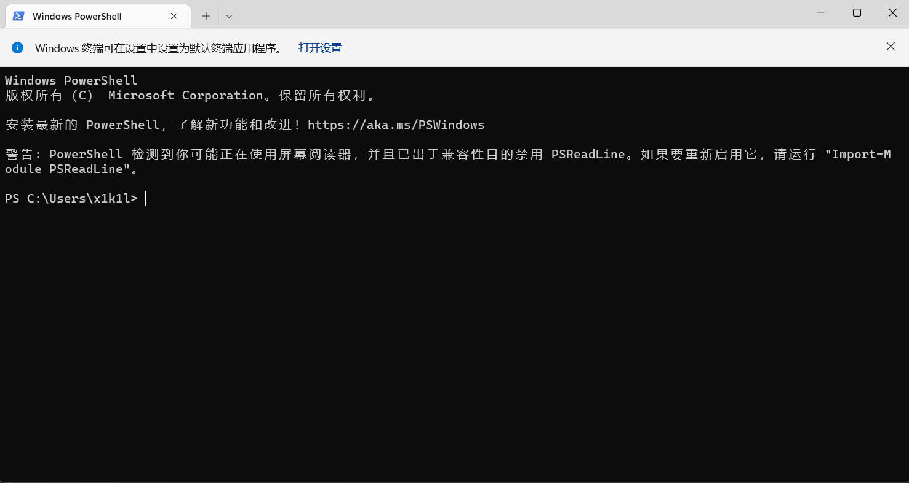
打开这个是错的❌。
正确打开的窗口是这样的:
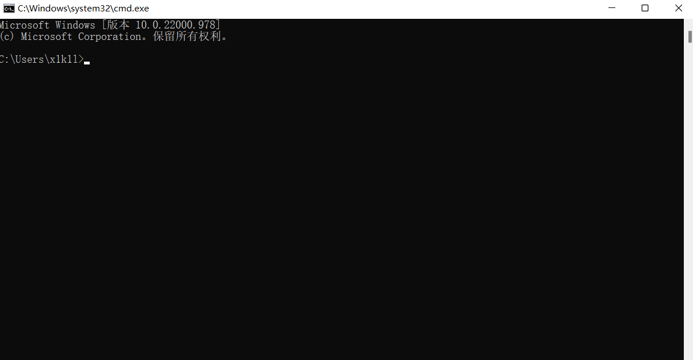
第六步：cd到文件夹的位置。
命令：cd 文件路径。
我的路径就是“C:\Users\x1k1l\OneDrive\桌面\文件影藏”
命令就是：cd C:\Users\x1k1l\OneDrive\桌面\文件影藏
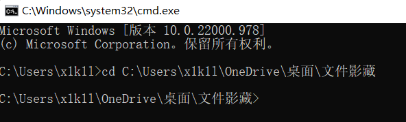
第七步：开始隐藏文件。
我们需要用到命令copy。
命令:copy /b 图片名称 + 压缩文件名称 输出图片的名称
我的图片名称是“c.png”
我的压缩文件名称是“文件影藏.rar”
我想把输出的图片名称叫做“输出.png”
那么我的代码就是:copy /b c.png + 文件影藏.rar 输出.png
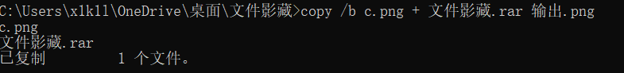
回车之后输出和以上类似的代码就算成功了。
第八步：查看隐藏结果。
回到文件夹中，我们可以看到多出了一个“输出.png”
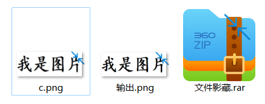
这张图片也是可以正常打开的。
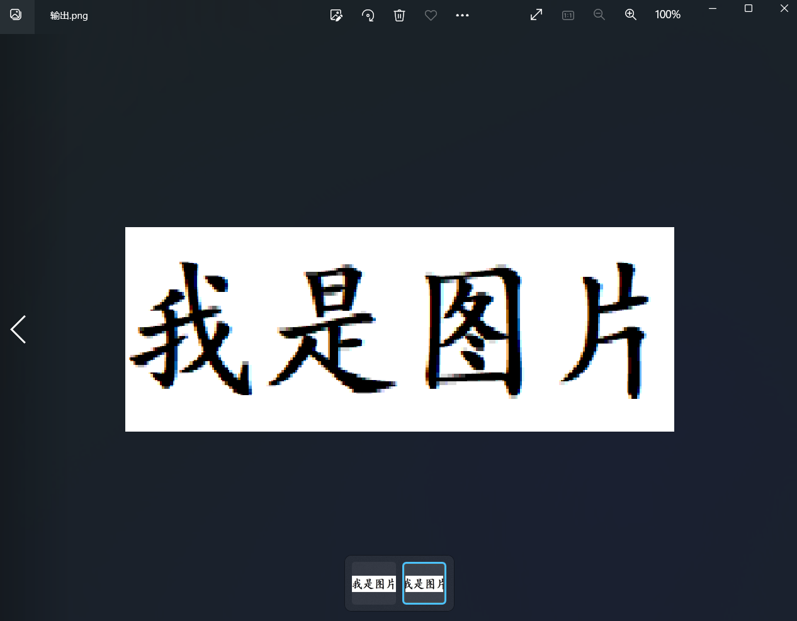
把它的后缀改成之前那个压缩文件的后缀,顺便把之前那张图片和之前那个压缩文件删除掉。
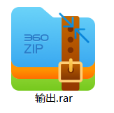
然后打开就可以查看隐藏的文件了。
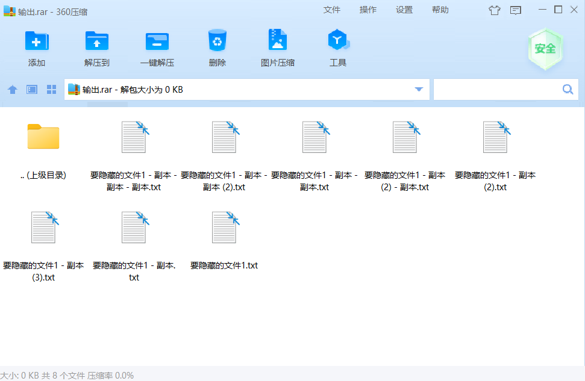
还可以把后缀改回来。
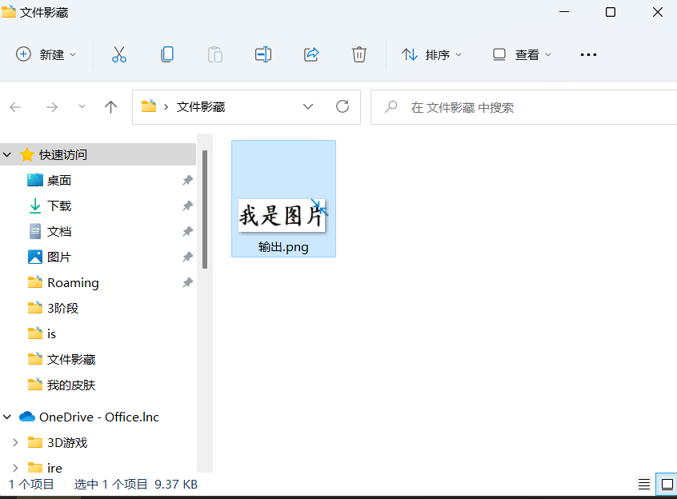
问题:文件没有显示后缀怎么办？
点击这个查看。
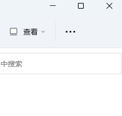
鼠标移动到显示，勾选文件扩展名即可
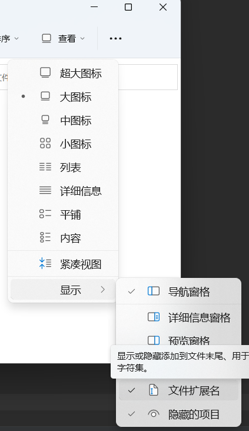
其他问题联系邮箱:gxlydlyf@ssjs.shop
视频演示:
观看不了请点击三个点然后下载视频。视频过大，请慢慢等待。